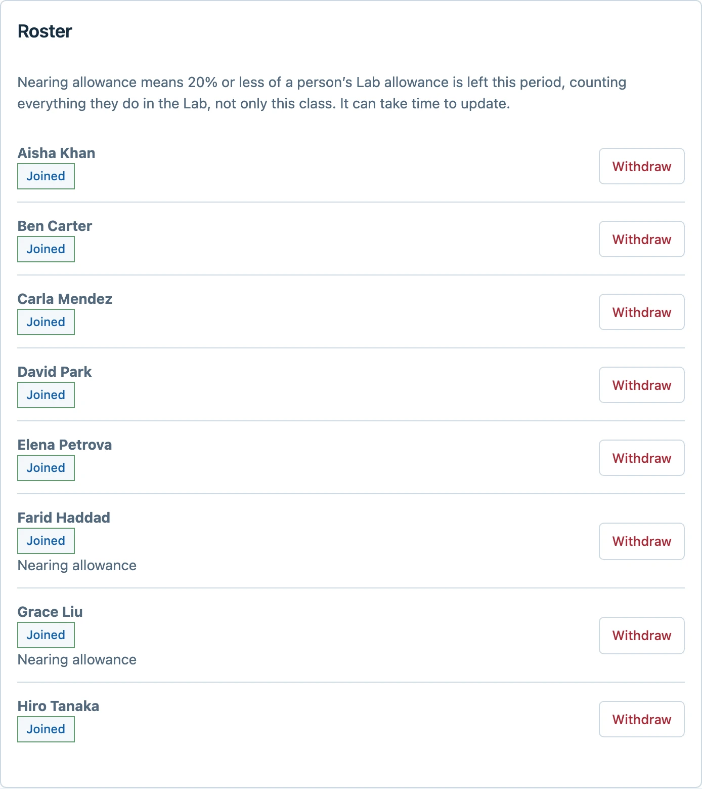

CUNY AI Lab
Luke Waltzer, Matthew K. Gold, Stefano Morello, Stephen Zweibel and Zach Muhlbauer
CUNY Graduate Center, October 14, 2026
Infrastructure Decisions
Stefano Morello
American Social History Project / Center for Media and Learning
Guiding Principles
- Privacy by Design
- We send work only to zero-retention hosts, or keep it on our own GPU server
- Transparency
- We favor open-weight models and list each one’s license, abilities and limits in the Model Registry
- Environmental Accountability
- We show estimated energy and carbon under every Sandbox response
- Criticality
- We teach how models work in workshops, and students compare them side by side
Handling Requests
- Faculty, students and librarians bring us their problems
- We check our existing tools first
- Otherwise we offer model access, a workshop, or a new tool
- We use what we learn to choose models and plan new tools
Services We Buy and Run
Cloud-based
Local
1Start
CUNY Login
Request to the Lab
2Check
Front door access and allowance
Lab staff review the request
3Tool
SandboxStudiosMedia ToolsModel API
TranscriptionSpeaker labelsImage descriptionOCR
4Route
Model gateway one API for every model
Private network Lab staff only
5Model
Commercial hosts zero retention
GPU server, New Media Lab stays at the GC
Run by the Lab Run by someone else
Sustaining and Sharing the Work
- We publish most of our code so other universities can adapt it
- We review a tool more closely as more people rely on it
- We need staff, not just licenses, to keep these services running
The CAIL Gateway, Access and Agent Tools
Stephen Zweibel
Mina Rees Library, CUNY Graduate Center
The CAIL Gateway
- We connect the Lab’s tools to it
- We choose which models to offer
- We give each person and app a monthly allowance
- We run it on Cloudflare Workers and pay per request
Lab tools
Sandbox, Studios, Media Tools
Personal API keys
Researchers’ own code
Approved applications
Other CUNY projects
CAIL Gateway
Credential, allowance and model checks
Model providers
Zero retention, open weights
Applying for Access
- People apply on their own or for a whole class
- Everyone signs in with CUNY Login first
- We review each application and set an allowance
- Instructors share one link, and students join with it


Administration screens show sample data
Class Overview for Instructors
- Instructors see who has joined their class
- They see each student’s estimated spending
- They can replace or close the class link
- They can withdraw a student


Sample data
Administration
- We see every person’s access, allowance and end date
- We see each class with its teachers and students
- We approve, renew and withdraw access in one place
- We can do the same work from Claude or Codex through an MCP server


Sample data
Agent Studio and Site Studio
- People hand the agent a whole task
- Researchers keep sources, files and drafts in one Agent Studio workspace
- Faculty and students build and preview academic websites in Site Studio
- Same sign-in and allowance as the other tools


CAIL Pi
- Pi is an open-source coding agent for the terminal
- Participants set it up with the Lab’s models in one command
- Each person uses their own Lab key and allowance
- We teach with it in this fall’s vibe-coding workshops
Apps and Outreach
Zach Muhlbauer
CUNY Graduate Center
The CAIL Sandbox


Comparing Open-Weight Models


Configurations for Courses

AmigAI in Spanish Courses

Tools Portal
- ailab.gc.cuny.edu/tools
- Transcription, image description and OCR
- PDF accessibility checks
- A free, public AI Use Disclosure tool

Access and Outreach
- Graduate Center students, faculty and staff
- Selected faculty and staff from other campuses
- Students at other CUNY campuses, through a class
- Fall workshops and a second cohort of fellows